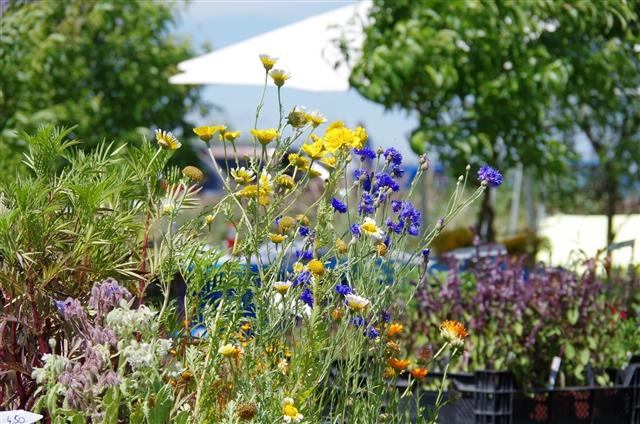
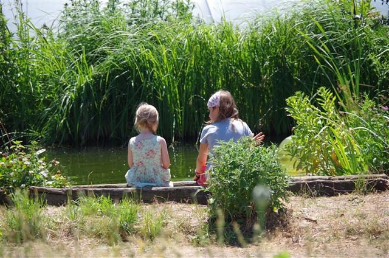
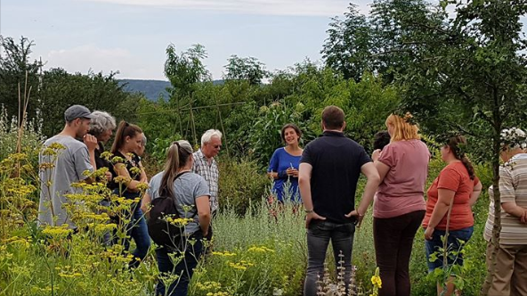

Auch 2019 wird die Kräuterinsel trotz anhaltender umfangreicher Baumaßnahmen im Ort für Sie geöffnet sein!!!
Wir sind momentan aus Richtung Grabsleben (B7) gut zu erreichen.
Von Grabsleben kommend sind es nur ca. 20m, die Sie über eine meist ruhende Baustelle fahren bis Sie rechter Hand zur Kräuterinsel abbiegen.
Fühlen Sie sich bitte als Anlieger und unterstützen Sie uns durch diese schwierige Baustellenzeit zu kommen!!!
Auch 2019 wird die Kräuterinsel trotz anhaltender umfangreicher Baumaßnahmen im Ort für Sie geöffnet sein!!!
Wir sind momentan aus Richtung Grabsleben (B7) gut zu erreichen.
Von Grabsleben kommend sind es nur ca. 20m, die Sie über eine meist ruhende Baustelle fahren bis Sie rechter Hand zur Kräuterinsel abbiegen.
Fühlen Sie sich bitte als Anlieger und unterstützen Sie uns durch diese schwierige Baustellenzeit zu kommen!!!
Herzlich Willkommen!!!
Sind Sie auf der Suche nach Kräuterpflanzen für die regionale, mediterrane oder weltweite Küche,
Arzenei-, Färber- oder Zauberpflanzen,
Pflanzen mit essbaren Blüten, Wildkräutern, Stauden-, Gemüse- oder Obstraritäten?
Auf der Kräuterinsel Cobstädt sind Sie genau richtig gestrandet!
 Wir laden Sie ein sich bei uns ein Stück Urlaubsgefühl in den Alltag zu holen. Entdecken und erleben Sie am Ortsrand von Cobstädt unsere einmalige Pflanzenvielfalt in einem großen Kräuterschaugarten und lassen sie sich von der besondere Atmosphäre der Kräuterinsel verzaubern.Gerne wollen wir Ihnen den Wunsch nach gesunden, naturnah produzierten Pflanzen erfüllen und arbeiten daher rein biologisch. Wir sind zwar noch nicht als offizieller Bio-Betrieb gelistet, gehen aber unsreren Weg in tiefer Naturverbundenheit.
 Unsere Pflanzen lassen wir unter natürlichen Gegebenheiten mit viel Leidenschaft und Hingabe heranwachsen.
Ein regionales, nachvollziehbares und ressourcenschonendes Wirtschaften ist uns hierbei eine wichtige Herzensangelegenheit. Wir arbeiten daher ausschließlich mit organischen Düngern, torfsparenden Topferden und natürlichen Pflanzenschutz. Wir wollen somit sicher stellen, dass wir Ihnen kraftvolle, abgehärtete und nachhaltig produzierte Pflanzen anbieten können.
 Vor Ort ist es uns dabei ein Anliegen Ihnen die kulinarischen,
medizinischen oder kulturhistorischen Geschichten nahe zu bringen und
Ihnen Anwendungs- und Pflegehinweise mit auf den Weg zu geben.
Vor Ort ist es uns dabei ein Anliegen Ihnen die kulinarischen,
medizinischen oder kulturhistorischen Geschichten nahe zu bringen und
Ihnen Anwendungs- und Pflegehinweise mit auf den Weg zu geben.Unsere Pflanzen sollen für Sie etwas wirklich Besonderes sein und wir wollen unsere Arbeit vielmehr als eine Dienstleistung an der natürlichen Vielfalt betrachten.
Wir freuen uns, Ihnen auch eine Reihe interesanter Veranstaltungen anbieten zu können. Hierfür haben wir uns Partner mit ins Boot geholt, welche das Angebote der Kräuterinsel Cobstädt mit spannenden Führungen und Seminaren bereichern.
 Wer ehrliche Handarbeit, Beratung und Natürlichkeit zu schätzen weiß, wird sich bei uns sicher wohl fühlen. Bei einem Besuch der Gärtnerei sollten Sie aber bitte der Witterung entsprechend gekleidet sein, da wir nein zu versiegelten Flächen und ja zu einem lebenden Boden sagen.
Kommen Sie also zu uns nach Cobstädt, verbinden Sie Ihren Besuch mit einem Spaziergang über das Gelände des Lebensgut Cobstädt e.V., auf welchem allerhand in Vergessenheit geratene Obstsorten angepflanzt sind.
Hier gibt es auch Windkunstwerke zu bestaunen, Selbsterntebeete zu bearbeiten und vieles mehr zu entdecken. Des weiteren können Sie in Cobstädt auch Dienstags und Freitags zwischen 15 und 18 Uhr den Hofverkauf der Bioland- Gärtnerei Grünschnabel besuchen und dort frisches, regional erzeugtes Gemüse sowie Gemüsejungpflanzen erwerben. Ein Ausflug nach Cobstädt lohnt sich also in vielerlei Hinsicht.
Wir freuen uns auf Ihren Besuch!!!